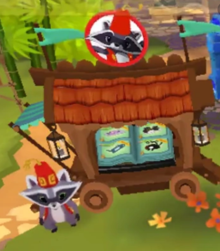
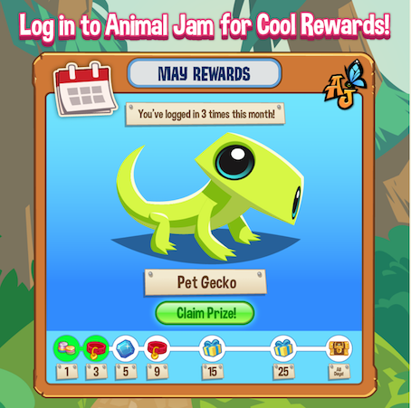

New Pet Features
Not only does Animal Jam have new pet features, they also include a daily reward. You can also go visit Athur the raccon, his nickname the traveling salesman. You can buy betas that you can only get in his shop, but be aware he will move, so quickly buy the things you want!
 